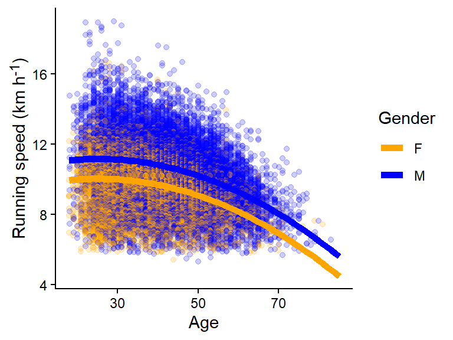

In previous chapters we have specified a linear model and made simple predictions. In this chapter we will extend the model further and make predictions and comparison using a model containing interaction effects.
10.1 Predicting marathon running speeds
We previously fitted a model to predict running speeds during the 2012 Boston Marathon in males and females. The model is visualized below (Figure 10.1).
Code
# Load packageslibrary(tidyverse)library(exscidata)library(ggtext)# Filter the data and calculate speeddat <- exscidata::boston |>filter(year ==2012) |>mutate(speed =42/ ((seconds/60)/60), age2 = age^2)# Fitting the model m1 <-lm(speed ~ gender + age + age2, data = dat) # Calculate predictionspredictions <-data.frame(age =rep(seq(from =18, to =85, by =1), 2), gender =rep(c("M", "F"), each =136/2)) |>mutate(age2 = age^2, speed =if_else(gender =="F", coef(m1)[1] + age *coef(m1)[3] + age2 *coef(m1)[4], coef(m1)[1] +coef(m1)[2] + age *coef(m1)[3] + age2 *coef(m1)[4])) # Plot the raw data together with model predictions. p1 <- dat |>ggplot(aes(age, speed, color = gender)) +geom_point(position =position_dodge(width =0.25), alpha =0.2) +theme_classic() +scale_color_manual(values =c("orange", "blue"))+geom_line(data = predictions, aes(age, speed), linewidth =2) +labs(x ="Age", y ="Running speed (km h<sup>-1</sup>)", color ="Gender") +theme(axis.title.y =element_markdown()) p1

Figure 10.1: A curve-linear relationship between age and running speed affects (A) the estimate of the gender difference in running speeds (B)
The model can be described with the following notation.
\[
\begin{align}
y_i &\sim \operatorname{Normal}(\mu_i, \sigma) \\
\mu_i &= \beta_0 + \beta_1\text{gender}_{i} + \beta_2\text{age}_{i} + \beta_1\text{age}^2_{i}
\end{align}
\] The model allows for a curve-linear relationship between age and speed (\(\beta_2\text{age}_{i} + \beta_1\text{age}^2_{i}\)) and a average difference in running speed when we compare females to males (\(\beta_1\text{gender}_{i}\)). The model definition gives us a model matrix used by the model fitting algorithm to fit the model (the lm function in R). A selection of rows in the model matrix is shown in Table 10.1. We can use the model matrix to predict values for each observation in the data set. To do such a prediction we will use the estimated parameters from the model displayed in Table 10.2.
Table 10.1: Model matrix for a selection of rows in the data set.
Intercept
Gender (F = 0, M = 1)
Age
Age2
1
1
32
1024
1
0
50
2500
1
1
47
2209
1
1
31
961
1
0
43
1849
1
0
37
1369
1
1
45
2025
1
0
38
1444
1
0
34
1156
1
1
28
784
We can predict the outcome for the first observation shown in the model matrix using the parameter estimates from tbl-coef-m1. First we multiply the intercept parameter with 1, next we add the gender parameter multiplied with 1 followed by adding the age and age2 multiplied with their respective variable from the model matrix.
Table 10.2: Parameter estimates from model 1.
Parameter
Variable
Estimate
β0
Intercept = 1
9.05
β1
Gender (Female = 0, Male = 1)
1.126
β2
Age
0.078
β3
Age2
−0.002
Together our prediction gives us:
\[
\begin{align}
\hat{y}_{id = 1} &= 1 \times \beta_0 + 1 \times\beta_1 + 32\times \beta_2 + 1024\times\beta_3 \\
\hat{y}_{id = 1} &= 1 \times 9.05 + 1 \times 1.126 + 32\times 0.078 + 1024\times -0.002 \\
\hat{y}_{id = 1} &= 10.624
\end{align}
\] For the second observation, the gender variable is set two 0, as we have observed a female runner. The age is also different from the previous observation (50 years old). The prediction gives us:
\[
\begin{align}
\hat{y}_{id = 2} &= 1 \times \beta_0 + 0 \times\beta_1 + 50\times \beta_2 + 2500\times\beta_3 \\
\hat{y}_{id = 2} &= 1 \times 9.05 + 0 \times 1.126 + 50\times 0.078 + 2500\times -0.002 \\
\hat{y}_{id = 2} &= 7.95
\end{align}
\] The key is that we add the terms together to get predictions for particular observations. Let’s compare the average male to the average female at age 30.
When we keep the age parameter constant, the difference between genders correspond to the estimate of the β1 parameter. This is because the model estimates two parallel lines, as seen in Figure 10.1. An alternative hypothesis could be that the association between age and running speed are different between genders.
10.2 Interactions
An interaction can be defined as an effect of a variable being dependent upon another variable. In the model above, we allowed the model to account for a difference between males and females in running speed, however, the effect was constant over all ages. In other words, the effect of age on running speed was not different between males and females. An alternative hypothesis could be that running speed varies differently between males and females across ages. If this is true, the difference between males and females in running speed would depend on age. Maybe older women are more similar to men?
To allow for the model to account for age-dependent differences between males and females we need to introduce an interaction effect into our model. We keep the same distributional assumption (\(y_i \sim \operatorname{Normal}(\mu_i, \sigma)\)), but we add components to the deterministic model.
\[
\mu_i = \beta_0 + \beta_1\text{gender} + \beta_2\text{age}_{i} + \beta_3\text{age}^2_{i} + \beta_4 (\text{gender}\times\text{age}_{i}) + \beta_5 (\text{gender}\times\text{age}^2_{i})
\] Since the gender variable is a variable that can be either 0 or 1 the extra parameters are only “active” for males. This allows the model to predict gender-specific age effects. Let’s fit the model and examine the predictions.
Fitting the model in R
# These examples are the same using R syntaxm2 <-lm(speed ~ gender * (age + age2), data = dat)m2 <-lm(speed ~ gender + age + age2 + age:gender + age2:gender, data = dat)
The resulting coefficients are displayed in Table 10.3 together with estimates from Model 1. A major difference between the two models is the parameter for the gender effect. The extra parameters (β4 and β5) allows for male-specific age effects. The estimates are small compared to the female reference, these parameters represents the difference between genders in the age parameter effect. Let’s plot predictions from the model.
Table 10.3: Parameter estimates from model 1 and 2.
Parameter
Variable
Model 1
Model 2
β0
Intercept = 1
9.05
8.116
β1
Gender (Female = 0, Male = 1)
1.126
3.131
β2
Age
0.078
0.115
β3
Age2
−0.002
−0.002
β4
Gender×Age (Female = 0, Male = Age)
NA
−0.081
β5
Gender×Age2 (Female = 0, Male = Age2)
NA
7.386 × 10−4
R has several functions dedicated to doing predictions and comparisons based on regression models, we will use the predict function to predict running speed for males and females. The prediction require a data set of predictor variables similar to the model matrix (Table 10.1). In the table below we are using a set of predictor values to predict from model 1 and model 2 (Table 10.4).
Table 10.4: Predictions from Model 1 and 2.
Age
Gender
Age2
Predictions
Model 1
Model 2
20
M
400
11.122
11.479
40
M
1,600
10.825
10.806
60
M
3,600
9.284
9.229
20
F
400
9.996
9.676
40
F
1,600
9.699
9.741
60
F
3,600
8.158
8.31
The predictions are not that different in our table, to get a better overview, we will visualize both models Figure 10.2.
Figure 10.2: Two models including curve-linear relationship between age and running speed affects. Model 1 includes constant age effect across genders, model 2 allows for gender specific effects of age.
The two models predict very similar running speeds but seems to differ more at extreme age values (< 20 and > 80). But why did we see such a big difference between gender coefficients in between Model 1 and Model 2?
If we extend the predictions to Age = 0 we will see the difference the models gives us when we set age to 0 (Figure 10.3). The figure clearly shows that predictions are not a good representation of the outside world, toddlers are unlikely to keep up with the average 20 year old marathon runner.
Figure 10.3: Model predictions outside the data will give us unrealistic values.
10.2.1 Center the age predictor variable on the average age
If we want to get more reasonable predictions directly from the parameter estimates we could center the predictor variable age on the mean age in the data. To do this we would subtract the mean value for the age variable from all age observations (\(\text{age}_i - \operatorname{mean}({\text{age}})\)). The mean age in the data set is 41.8, this means that a runner with age 41 will get a value of -0.8 in our mean centered variable.
The code below shows this operation and the fitting of the model in R. Centering predictors is similarly straight forward in other software. The resulting coefficients differ between model 2 and model 3, however, these models will give us exactly the same predictions for the actual age (tbl-coef-m3).
Code
# Mean centering the age variabledat2 <- dat |>mutate(age = age -mean(age), age2 = age^2)# Fitting the model with mean centered datam3 <-lm(speed ~ gender * (age + age2), data = dat2)
Table 10.5: Parameter estimates from model 1, 2 and 3.
Parameter
Variable
Model 1
Model 2
Model 3
β0
Intercept = 1
9.05
8.116
9.671
β1
Gender (Female = 0, Male = 1)
1.126
3.131
1.027
β2
Age
0.078
0.115
−0.041
β3
Age2
−0.002
−0.002
−0.002
β4
Gender×Age (Female = 0, Male = Age)
NA
−0.081
−0.019
β5
Gender×Age2 (Female = 0, Male = Age2)
NA
7.386 × 10−4
7.386 × 10−4
10.3 Summary
Average predictions from regression models are about combining coefficients with variable values. This can be done to create comparisons between, e.g., two groups. By adding an interaction to a model we allow for the value of one variable to change the effect of another variable in the model. An interaction effect is created by multiplying two (or more) variables and fit it in the model with a specific parameter.